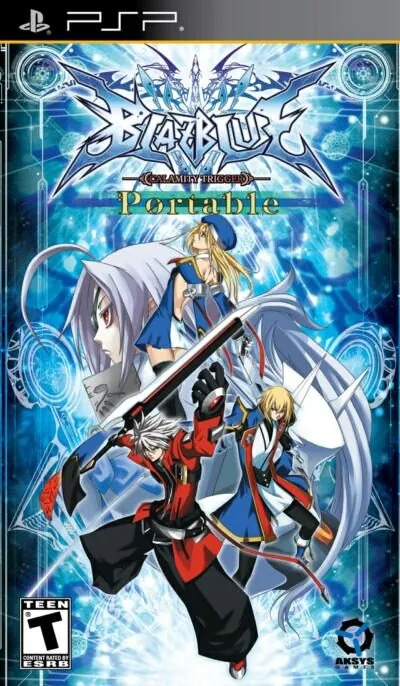

PSP
BlazBlue: Calamity Trigger
- Año: 2010
- Desarrollador: Arc System Works
- Género: Lucha
- Jugadores: 2 jugadores
El juego utiliza un control de 8 direcciones, común en la mayoría de los juegos de lucha, 4 botones de ataque: Débil (A), Medio (B), Fuerte (C), y Drive (D), este último activa habilidades especiales únicas de cada personaje. Los agarres y cancelación de agarres se realizan presionando B y C al mismo tiempo. Además de los saltos y dashes básicos, también hay dashes aéreos, saltos dobles y súper saltos.5
Guard Libra: Al poner defensa o forzar al oponente a poner defensa, esta barra cambiara. Cuando se llena completamente hacia alguno de los lados, la defensa del jugador que se esté cubriendo en ese momento se romperá y quedara vulnerable temporalmente.
Barrier Gauge: Una barra que se regenera con el tiempo, se usa para el Barier Guard. Las capacidades defensivas del personaje decrecen por un período cuando la barra llega a cero.
Barrier Guard: Empuja hacia atrás al enemigo y previene daño durante la guardia. Se realiza presionando débil y medio al mismo tiempo mientras se bloquea un ataque.
Barrier Burst: Empuja al oponente lejos del personaje, ya sea durante la guardia o durante un combo, rompiendo el combo del oponente en el último de los casos. Utiliza el 100% de la barrier gauge y la vacía a cero por un período. Se realiza presionando los cuatro botones de ataque al mismo tiempo.
Heat Gauge: Una barra de energía usada para el Distortion Drive y Rapid Cancel.
Counter Assault: Contrarresta el ataque de un oponente mientras se pone defensa. Consume 50% de la Heat Gauge. Se realiza presionando adelante, A, B simultáneamente.
Rapid Cancel: Cancela el tiempo de recuperación de un ataque. Consume 50% de la Heat Gauge. Se realiza presionando los botones A, B y C al mismo tiempo durante un ataque.
Distortion Drive: Ataques especiales únicos de cada personaje que consume 50% de la Heat Gauge. Se realizan mediante secuencias de palanca y botones.
Astral Drive: Ataques especiales únicos de cada personaje. Consumen 100% de la Heat Gauge. Solo se pueden activar durante el último round y su contrincante debe tener su barra de vida al 20% o menos.
HISTORIA --------
En un tiempo que hace mucho que pasó, la humanidad enfrentaba la extinción a manos de la Bestia Negra, una criatura que apareció desde la oscuridad. La Bestia estaba poseída por un extraordinario poder, y parecía que el tiempo de la humanidad estaba por llegar a su fin. Fue entonces, en la hora más oscura de la humanidad, que seis héroes de origen desconocido vinieron para derrotar a la Bestia. Ellos trajeron consigo el antiguo poder de la magia , el que compartieron libremente con la humanidad. Volviendo su ingenuidad a la formación de nuevas y más poderosas armas, los humanos descubrieron un proceso por el cual podían combinar su propia tecnología con el poder de la magia. Fue de esta manera que los humanos crearon el Armagus, y descubrieron un poder aún más grande que el poder que la magia o la tecnología podían ofrecerles por separado.
Con este recién descubierto poder, la humanidad, junto con los seis héroes, confronto a la Bestia una vez más. Después de muchas batallas sangrientas, la Bestia finalmente cayo, terminando lo que seria conocida como La Primera Guerra de La Magia . Los héroes que habían peleado junto a los guerreros humanos en la Primera Guerra de la Magia fueron inmortalizados por sus acciones, y a través de las generaciones fueron conocidos como los Seis Héroes.
Fue durante la Primera Guerra que una organización fue formada para regular el uso del Grimorio de Armagus , los textos de entrenamiento del Armagus, llamada Novus Orbis Librarium Armagus , fue esta organización, con el poder que poseía a través del Grimorio de Armagus, que trajo gran avance a lo largo del espectro de la tecnología humana. Este avance lanzó a la humanidad hacia una vasta reconstrucción. Décadas han pasado desde que el Librarium se estableció como una dictadura y el Armagus se convirtió en el factor decisivo en casi todos los asuntos de la humanidad. Esto llevó a una gran brecha socioeconómica entre aquellos que pueden usar el poder del Armagus y aquellos que no pueden.
La tensión empezó a crecer, y en poco tiempo una organización rebelde llamada La Unión Ikagura apareció, desafiando la autoridad totalitaria del Librarium. Con la creación de la Unión Ikagura, las inconformidades se convirtieron en hostilidades y "La Segunda Guerra de la Magia" comenzó. Fue este conflicto, que también se conoció como La Guerra Civil de Ikagura, que vio por primera vez a los humanos usar el poder del Armagus en contra de sus semejantes.
La Segunda Guerra llegó a su fin con la destrucción de la Unión Ikagura. Temeroso de futuros conflictos, el Librarium consumo su subyugación sobre la población al anunciar el siguiente decreto: Quien quiera que busque desafiar al Novus Orbis Librarium Armagus será ejecutado, sin excepción.
Varios años después del fin de la Segunda Guerra, un sector del Librarium con la reputación de comandar una fuerza tan poderosa como el ejército de una nación, fue repentina y completamente destruido. Los pocos supervivientes hablaron en tono enmudecido y tembloroso de un solo hombre que había aparecido de la nada, destruyendo todo a su paso. Su nombre era Ragna the Bloodedge.
Él sostiene una guerra de un solo hombre en contra del poder del Librarium, peleando para destruir su garra de hierro alrededor del cuello de la humanidad. Es un hombre que ha declarado la guerra en contra del mundo mismo.
PERSONAJES ----------
El juego cuenta con 12 personajes
Ragna the Bloodedge Jin Kisaragi Noel Vermillion Iron Tager (TR-0009) Rachel Alucard Taokaka Litchi Faye Ling Arakune Bang Shishigami Carl Clover Hakumen v-13
Controles
que el luchador se mueva con el joystick y qué botón hace cada ataque: A (flojo), B (medio), C (fuerte) y D (Drive, el especial de cada personaje). Según la Wikipedia, dos a la vez: B + C agarra y A + B mantenido hace la barrera. ¿Va fluido?
Mando de PSP. El joystick mueve la cruceta y también la palanca analógica, porque muchos juegos de PSP solo se mueven con ella.
| Panel | Juego |
|---|---|
 | ✕ |
 | ○ |
 | R |
 | □ |
 | △ |
 | L |
 | Start |
 | Select |
+  | Salir del juego |
El panel en PSP


Argumento
Recopilado de internet (2026-11-04). Lo marcado con ⚠️ no está probado en la bartop.
Hace tiempo, la humanidad estuvo a punto de desaparecer por culpa de la Bestia Negra. La salvaron seis héroes que usaban la magia y que ayudaron a crear el Ars Magus, una mezcla de magia y ciencia. Tras aquella guerra se fundó el Novus Orbis Librarium (la Biblioteca, NOL) para gobernar el mundo con el Ars Magus. Su dominio acabó provocando una segunda guerra, la de Ikaruga, que la Biblioteca ganó y tras la que endureció su mano.
En diciembre de 2199, un rebelde llamado Ragna, el «Segador», destruye una de las sedes de la Biblioteca. La NOL ofrece la mayor recompensa de la historia por él, y todos le persiguen, no solo por el dinero, sino por el poder que lleva dentro: el Grimorio Azur.
Final: ⚠️ cada personaje tiene su historia; las fuentes consultadas no cuentan el final.
Jugabilidad
Recopilado de internet (2026-11-04). Lo marcado con ⚠️ no está probado en la bartop.
- Lucha en 2D uno contra uno, de Arc System Works (los de Guilty Gear). Cada asalto se llama rebel; un combate tiene de uno a cinco.
- Cuatro ataques: flojo, medio, fuerte y Drive (A, B, C y D), cada personaje con su propio Drive. Los golpes se encadenan en combos, que hacen menos daño cuanto más largos.
- Barra de calor (Heat): se llena al dar y recibir golpes; con la mitad o más se pueden hacer las Distortion Drives, los ataques más fuertes y vistosos.
- Dos formas de cubrirse: la guardia normal, que se puede romper, y el bloqueo de barrera, que no se rompe pero gasta su propia barra (si se vacía, recibes el 150 % del daño).
- Versión PSP (BlazBlue Portable, 2010): el contenido de las versiones de consola (modo historia, voces en japonés o inglés, versiones «Unlimited» de los personajes), con multijugador local hasta cuatro. En la versión occidental de PSP falta la canción de la introducción.
Botones según las guías (⚠️ por confirmar)
| Juego | Panel | Acción |
|---|---|---|
| Joystick |  | Mover · saltar (arriba) · agacharse (abajo) · cubrirse (hacia atrás) |
| A | ⚠️ | Dar un golpe flojo |
| B | ⚠️ | Dar un golpe medio |
| C | ⚠️ | Dar un golpe fuerte |
| D | ⚠️ | Hacer el Drive, la técnica propia de cada personaje |
| B + C | ⚠️ | Agarrar |
| A + B mantenido (cubriéndose) | ⚠️ | Hacer el bloqueo de barrera |
| Start | | Pausar |
- ⚠️ No he encontrado en qué botones de la PSP van A, B, C y D: hay que probarlo (cuatro de □, △, ○ y ✕, que en el panel son Y, X, A y B).
Guía de niveles
Recopilado de internet (2026-11-04). Lo marcado con ⚠️ no está probado en la bartop.
- Arcade: combates seguidos con un personaje hasta su jefe final.
- Modo historia de las versiones de consola, con la historia de cada personaje.
- ⚠️ No he encontrado la lista de rivales del Arcade: ver «Vídeos».
Objetos
Recopilado de internet (2026-11-04). Lo marcado con ⚠️ no está probado en la bartop.
| Objeto | Qué hace |
|---|---|
| (ninguno) | Es un juego de lucha: no hay objetos |
Trucos y secretos
Recopilado de internet (2026-11-04). Lo marcado con ⚠️ no está probado en la bartop.
- Versiones «Unlimited»: personajes con propiedades de jefe, como las formas especiales de Guilty Gear.
- Galería con ilustraciones.
- ⚠️ No he encontrado trucos de botones para la versión PSP.
Longplay

Partida completa de la versión PSP (39 min), de RQ87, modo Arcade con un solo crédito: BlazBlue Calamity Trigger Portable playthrough (PSP, 1CC).